PSC / ownership
Status: loader built; code published, data not. The bulk PSC loader is built and merged (Stage 1 and the companies-per-person usability check are done). By decision the project publishes code and these aggregate summaries only — never the PSC data itself, which is personal data you download from Companies House yourself. The figures below are static, pre-computed summaries written by scripts/psc_site_summaries.py; this page runs no code and renders with no raw or Parquet data present.
Summary
“PSC” means persons with significant control — the people or entities that own or control a UK company. “Significant” means, roughly, more than 25% of the shares or votes, or the right to appoint most of the board. The register began in April 2016. Companies House publishes a daily bulk snapshot; this project analysed the 2026-09-18 snapshot (about 16 million records) end to end. It is rich enough to support company-level ownership features, but it is personal data, has no stable identifier for a person, and its structure is full of traps — so the project ships code and company-level aggregates only, keeps any person-level table private, and states match confidence honestly rather than imply a clean ownership graph.
Two populations — the figures below are shown for both, because the counts differ:
- All records in the product (an “ever” view). Every PSC line ever filed, including ceased control and companies now dissolved. Good for history; it roughly doubles “how many” counts. The product holds 10,917,257 distinct companies — nearly twice the live register.
- Live companies only (as of 2026-09-01). Records whose company is on the Basic Company Data register. There is no mid-month register product, so the nearest monthly register to the 2026-09-18 PSC snapshot is 2026-09-01 — 17 days earlier; the live figures carry that gap. [Checked]
Companies-per-person is shown only as banded aggregates, never as a person identity (see below).
Coverage
| metric | value |
|---|---|
| PSC snapshot date | 2026-09-18 |
| register used for “live” figures | 2026-09-01 (17 days earlier) |
| lines in the snapshot | 15,952,486 |
| PSC records (excluding the totals line) | 15,952,485 |
| distinct companies in the product (ever) | 10,917,257 |
| companies with an active PSC or statement | 10,854,237 |
| live companies on the register | 5,689,366 |
| live companies matched in the product | 5,536,905 (97.3% of the live register) |
| totals line — PSCs / statements / exemptions | 15,029,813 / 922,564 / 108 |
The totals line (Companies House’s own counts) reconciles exactly with the parsed counts. Source: docs/site/datasets/psc-assets/coverage.csv (from the loader’s load_report.json and psc_totals.json); docs/AUDIT.md (PSC loader Stage-1). [Checked]
2.7% of live companies have no PSC record (152,461 of 5,689,366 live companies are not matched in the product). The cause is not verified — it could be genuine “no registrable person” cases, exempt company types, or filing gaps. [Not verified]
Figures
Static summaries in psc-assets/, aggregates only, small counts (<10) rendered <10 in the CSVs and never drawn.
Records by kind
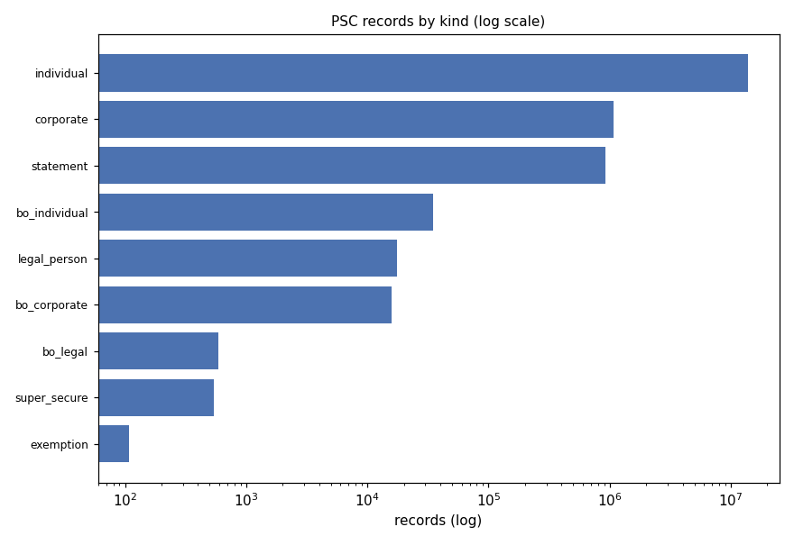
bo_* are overseas-entity beneficial owners — the separate Register of Overseas Entities regime, not the ordinary PSC regime. Source: psc-assets/01_records_by_kind.csv. [Checked]
Active vs ceased
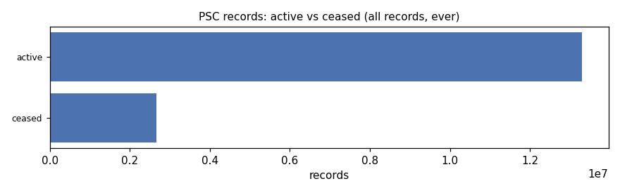
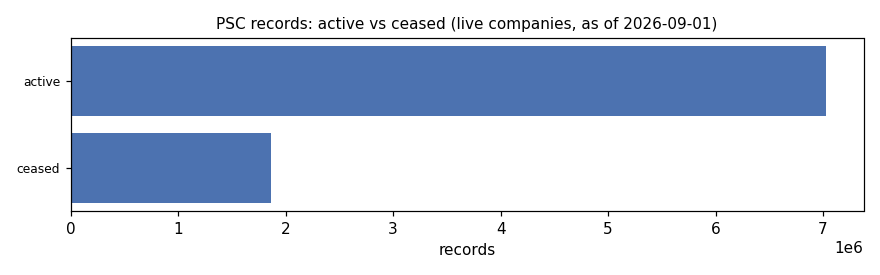
16.6% of all records are ceased; restricting to live companies removes dead-company history. Source: psc-assets/02_active_vs_ceased.csv, ..._live.csv. [Checked]
Nature-of-control core rights
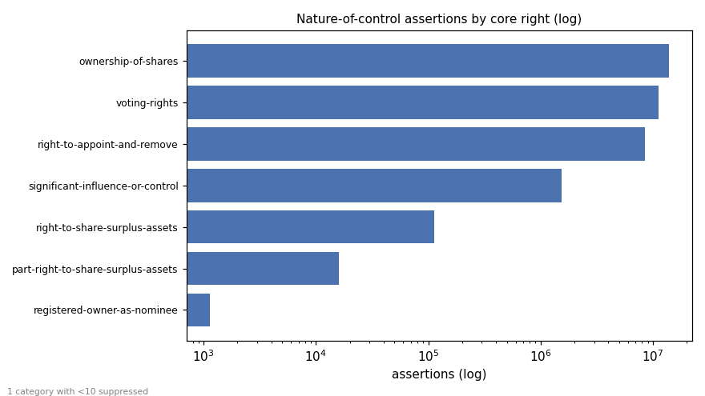
A single record can hold several rights, so assertions (35,169,887) far exceed records. Core rights are counted after stripping entity-type suffixes (trust / firm / LLP / overseas-entity and their compounds). “empty nature value” is a null array element (1 category suppressed, <10). Source: psc-assets/03_noc_cores.csv. [Checked]
PSC information state per company
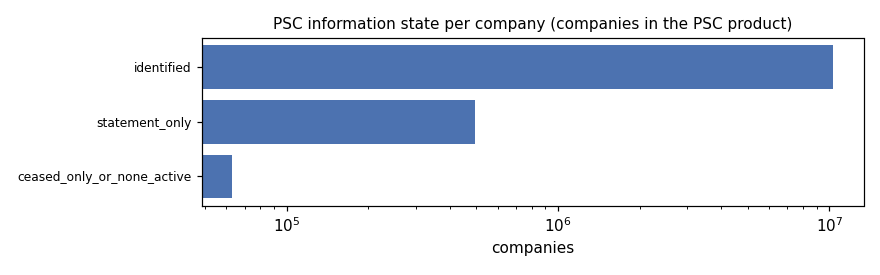
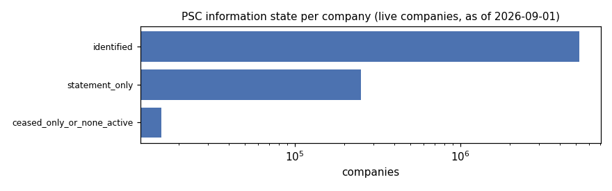
Per company: identified (≥1 active person/corporate PSC), statement_only (no active PSC but an active statement), or ceased-only / none active. Source: psc-assets/04_info_state_per_company.csv, ..._live.csv. [Checked]
Control start year, active vs ceased
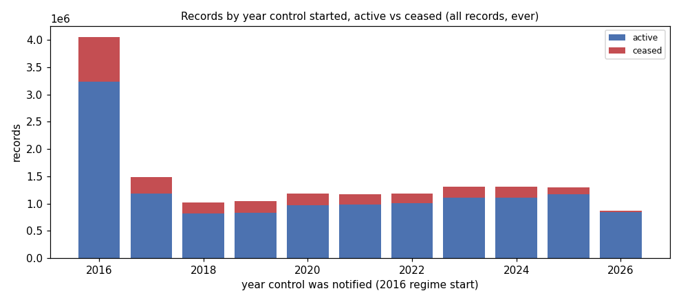
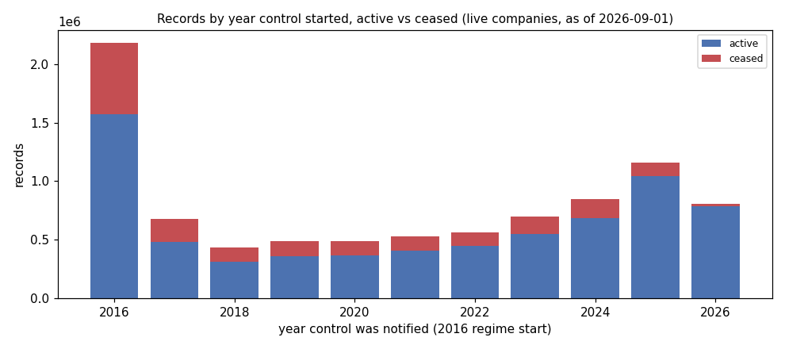
The 2016 spike is the regime start (existing companies declaring control at once). Source: psc-assets/08_control_start_year.csv, ..._live.csv. [Checked]
Active statement codes
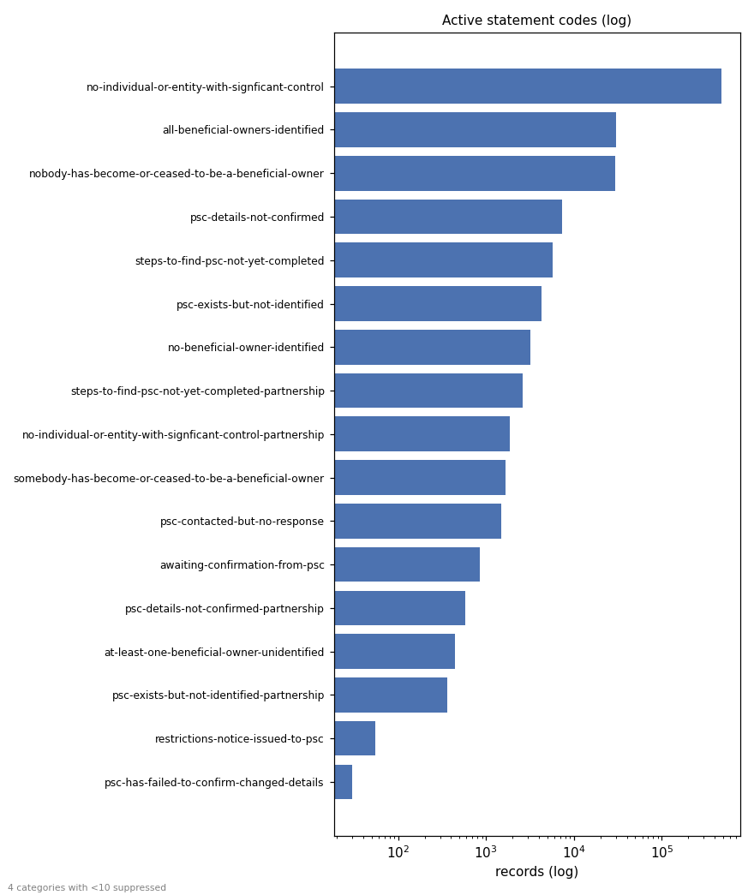
Codes are reproduced verbatim — no-individual-or-entity-with-signficant-control is Companies House’s own spelling of “significant” (not a typo on this page). 4 rare codes suppressed (<10). The three unresolved-owner codes (psc-details-not-confirmed, steps-to-find-psc-not-yet-completed, psc-exists-but-not-identified) are what the PSC_UNRESOLVED indicator keys off. Source: psc-assets/09_active_statement_codes.csv. [Checked]
ECCTA identity verification
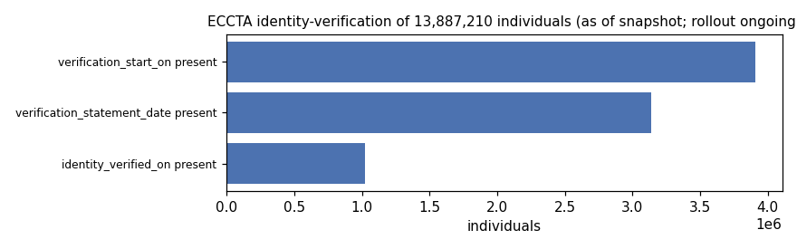
Counts are as of the snapshot; the ECCTA identity-verification rollout is ongoing, so these are lower bounds that will rise. Source: psc-assets/07_eccta_verification.csv. [Checked]
Companies per person (banded)
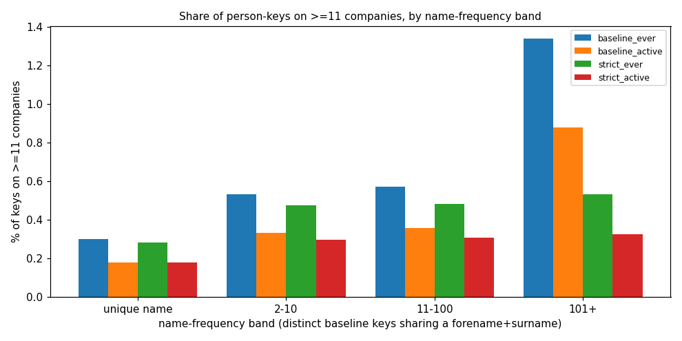
This is shown only as banded aggregates, never as a person identity. There is no stable person id, so a “person” is a fuzzy key: a baseline key (forename + surname + birth year + month) or a strict key that also includes the middle name. From the usability check (docs/psc-checks-results.md):
- ≤2.07% of baseline keys (4.91% of records) show a detectable split — a baseline key resolving into more than one strict key (a bound on detectable splits, not on all collisions).
- the strict key’s 53% coverage is a non-random subset (middle-name recording correlates with record vintage), so strict figures are a precision check, not a population rate.
- “active-only” and “ever” are shown separately (the chart plots both), because “ever” accumulates dissolved shells — 51% of the companies behind the high-count tail are dissolved.
Source: docs/psc-checks-results.md, psc-assets/06_companies_per_person_bands.csv. [Checked]
What you can and can’t answer
You can (read straight from the file, reliable):
- Does the company name a controller, or file a statement instead (e.g. “no one has more than 25%”)?
- How is control shaped — one 75–100% owner, several people, another company? (bands only)
- Is it owned by another company, and is that parent live? 77.9% of corporate owners with a registration number link to a live company. [Checked] (
docs/recon-psc-results.md; measured against the 2026-08-01 register, ~7 weeks older than the snapshot).
You can’t:
- exact ownership percentages (only bands such as 25–50%), or owners below 25%
- full dates of birth, or home addresses
- who the legal shareholders are
- what the file looked like on a day nobody saved
Only with honest uncertainty: whether a company’s controllers also control many others (companies-per-person) — reported banded, with the split bound above, never as a person identity.
Data governance
Reproduced verbatim from docs/psc-data-guide.md §5.
This project publishes code, not PSC data. Anyone who runs the code downloads the file from Companies House themselves and is responsible for how they use it. The points below are there so users know what they are handling.
- It is personal data. The file holds names, month and year of birth, nationality, country of residence and a correspondence address for about 14 million people.
- Public availability on Companies House does not remove data-protection duties.
- Under UK GDPR, anyone storing or analysing it needs a lawful basis and a sensible retention period.
- Nationality and age are sensitive. This project does not use nationality as a feature, because it risks discriminatory outcomes (Equality Act principles). Age is kept only as 5-year bands in private tables and is never an indicator. Users building their own features should think hard before doing otherwise.
- Aggregates can identify people. “The controller of this company also controls 40 others” points at a named person when the company has a single PSC. The same applies to small counts in a breakdown, such as 3 PSCs resident in a given country in a given sector.
- Some records are protected. Super-secure records are withheld to protect people at risk. Do not try to fill them in from other sources.
- Matching creates new information. Linking records into “likely the same person” produces a profile that no single Companies House record contains. Treat matched outputs as more sensitive than the source.
- In this project’s docs, all examples are invented or obfuscated, and published breakdowns suppress small counts.
Follow-ups
- Notification lag is deferred this pass. The meaning of
notified_on(date control began vs date the company told Companies House) is unsettled and needs the API documentation, so the lag figure is not shown here. The script still emitspsc-assets/05_notification_lag.csvfor when the semantics are resolved. [Not verified] - Live figures use the 2026-09-01 register (17 days before the snapshot); production should pair same-day snapshots or state the gap.
Details: what the recon found
The recon ran over all 32 parts of the 2026-09-18 snapshot — 15,952,486 records, 0 bad lines, in 404 seconds, joined against the 2026-08-01 Basic Company Data. Every figure here traces to docs/recon-psc-results.md / docs/recon-psc-results.json; the full write-up is docs/recon-psc.md. [Checked] (project measurement).
- History is reconstructable from 2016-04-06. Ceased PSC records are retained — 2,655,316 records (16.6%) carry a
ceased_ondate. 62,986 companies appear only as ceased records. - Statements exist, segregated at the tail. 922,564 records (5.8%) are statement records, all in parts 31–32. Parts 1–30 genuinely contain none.
- Partitioning is meaningless. Every part spans essentially the whole register. Stream all parts.
- Corporate PSCs. A registration number is present on 91.0%, of which 77.9% resolve to a live company — a usable company-to-company ownership edge.
- Natures of control. 35,169,887 assertions. The authoritative enumeration has 86 codes, which reduce to 7 core rights / 24 suffix-stripped bases once the full suffix set (including compound suffixes) is removed — the recon’s earlier “55” used a single-suffix definition. Source:
docs/psc-checks-results.md,tests/fixtures/psc_descriptions_natures.yml. [Checked]
Data-quality traps
- No stable person ID. Linking the same person across companies is a fuzzy join (see the banded companies-per-person figure). On the baseline key, 28.8% of keys appear on ≥2 records and 28.0% on ≥2 distinct companies (an “ever” figure). See pitfalls.
- Dirty dates. 14,554 records have
ceased_onbeforenotified_on; 23,916notified_ondates predate the 2016 regime (min1083-01-01); 272ceased_ondates fall outside 2016–2026 (269 before 2016; 3 after:2924,9998,9999); 17,729 individuals imply an age under 16 at notification. Source:docs/recon-psc-results.json; loaderf_ceased_out_of_rangeagrees (docs/AUDIT.md). [Checked] - One-shot snapshot. Only today’s file is served; corrections over time are lost unless you archive snapshots yourself.
Design decisions that follow
- Code only, never the data. The repository ships the extractor and methodology only.
- Private person table, public per-company aggregates. Any person-level linkage table stays private; only company-level aggregates (like those above) are published.
- Nationality excluded. Measured for data-quality documentation only, excluded from any product.
- Honest match confidence. Any companies-per-person statistic carries its matching method and confidence, never a settled fact.
Prior work to build on
- Global Witness + DataKind UK, “The Companies We Keep” (2018) — matched people on name + birth month/year + address; the natural benchmark for this project’s person matching.
- Open Ownership — its
bods-uk-psc-pipelinepublishes UK ownership in the Beneficial Ownership Data Standard. - OpenSanctions — its
gb-coh-pscconverter turns Companies House ownership data into a standard graph format.
Where to go next
- How the sources join — where PSC sits among the UK sources.
- Pitfalls — the PSC-specific traps.
- Prior work — what others have built with PSC data.